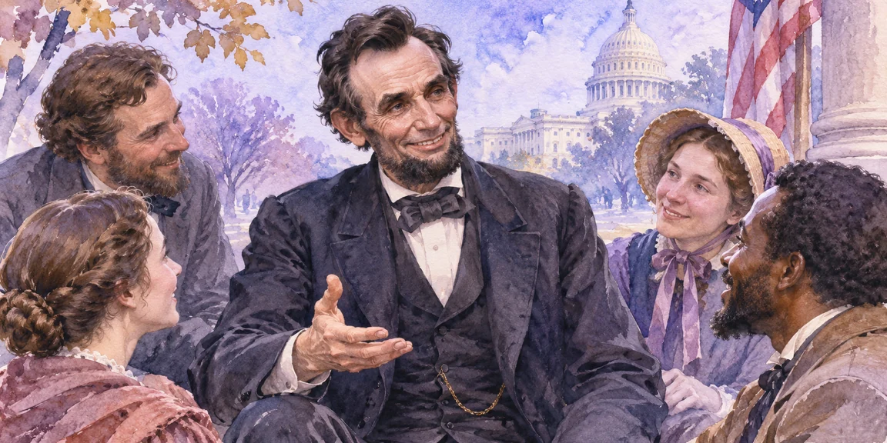

The Power of Humor
읽고 · 말하고 · 생각하는 영어

학습 안내
The Power of Humor
유머의 힘
핵심 단어 · Key Vocabulary
sense of humor 유머 감각
reply 대답하다
pressure 압박, 부담
criticism 비판
deal with ~에 대처하다
stay calm 침착함을 유지하다
relaxed 편안한, 긴장이 풀린
laugh at oneself 자신을 웃어넘기다
opponent 상대방
embarrassed 당황한, 부끄러운
accuse 비난하다
reduce tension 긴장을 줄이다
two-faced 두 얼굴을 가진, 위선적인
weakness 약점
appearance 외모
USEFUL SPEAKING PATTERNS / 유용한 말하기 패턴
1. I try to ~ when things get difficult.
상황이 어려워질 때 ~하려고 한다.
I try to stay calm when things get difficult.
(상황이 어려워질 때 침착하려고 합니다.)
2. Instead of ~ing, I try to ~.
~하는 대신 ~하려고 한다.
Instead of getting angry, I try to understand the other person.
(화를 내는 대신 상대방을 이해하려고 합니다.)
회화 패턴 · Speaking Patterns
1. I try to ~ when things get difficult.
상황이 어려워질 때 ~하려고 한다.
I try to stay calm when things get difficult.
(상황이 어려워질 때 침착하려고 합니다.)
2. Instead of ~ing, I try to ~.
~하는 대신 ~하려고 한다.
Instead of getting angry, I try to understand the other person.
(화를 내는 대신 상대방을 이해하려고 합니다.)
본문 읽기 · Reading
Abraham Lincoln and His Sense of Humor
Abraham Lincoln was the 16th president of the United States. He had to lead the
country through the Civil War, so he lived under great pressure. However, Lincoln
was famous for his sense of humor. He often told funny stories to make people feel
relaxed. Humor also helped him deal with stress during difficult times.
Lincoln could also laugh at himself. During a political debate, an opponent accused
him of being "two-faced," meaning that he was not honest. Lincoln did not get angry.
Instead, he made a joke about his own appearance. He replied, "If I had another face,
do you think I would wear this one?" The audience laughed. Instead of attacking the
other person, Lincoln used humor to answer the criticism.
Lincoln's humor teaches us an important lesson. Humor does not make our
problems disappear, but it can change the way we face them. When we can laugh at
ourselves, we do not have to feel embarrassed by every mistake or weakness. Humor
can reduce tension, bring people closer, and help us see a difficult situation in a
different way. Sometimes, being able to smile at ourselves is a kind of strength.
한국어 해석 · Translation
에이브러햄 링컨과 유머의 힘
에이브러햄 링컨은 미국의 제16대 대통령이었습니다. 그는 남북전쟁 동안 나라를 이끌어야 했기 때문에 큰
압박 속에서 살았습니다. 하지만 링컨은 유머 감각으로도 유명했습니다. 그는 사람들의 긴장을 풀어주기 위
해 재미있는 이야기를 자주 했습니다. 유머는 또한 힘든 시기에 스트레스를 견디는 데 도움이 되었습니다.
링컨은 자기 자신을 웃어넘길 줄도 알았습니다. 정치 토론 중 한 상대가 링컨에게 '두 얼굴을 가진 사람(two-
faced)'이라며 정직하지 못하다고 비난했습니다. 링컨은 화를 내지 않았습니다. 대신 자신의 외모를 이용해
농담을 했습니다. 그는 '만약 나에게 다른 얼굴이 하나 더 있다면, 내가 과연 이 얼굴을 하고 다니겠습니까?'
라고 대답했습니다. 청중은 웃음을 터뜨렸습니다. 상대방을 공격하는 대신 링컨은 유머로 비판에 답했습니다
.
링컨의 유머는 우리에게 중요한 교훈을 줍니다. 유머가 우리의 문제를 사라지게 하지는 않지만, 문제를 대하
는 방식은 바꿀 수 있습니다. 자신을 웃어넘길 수 있다면 모든 실수나 약점 때문에 부끄러워할 필요가 없습니
다. 유머는 긴장을 줄이고, 사람들을 더 가깝게 만들며, 어려운 상황을 다른 시각으로 바라보게 해줄 수 있습
니다. 때로는 자기 자신을 보며 웃을 수 있는 여유도 하나의 힘입니다.
토론 질문 · Discussion Questions
Why do you think Lincoln used humor during difficult times?
링컨은 왜 어려운 시기에 유머를 사용했다고 생각하나요?
Do you think being able to laugh at yourself is important? Why?
자기 자신을 웃어넘길 수 있는 것이 중요하다고 생각하나요? 왜 그런가요?
Have you ever used humor to make an awkward or stressful situation better?
어색하거나 스트레스가 많은 상황을 유머로 더 좋게 만든 경험이 있나요?
What do you usually do when someone criticizes you?
누군가 당신을 비판할 때 보통 어떻게 하나요?
예시 답변 · Sample Answers
I think humor helped Lincoln deal with pressure. He had many serious problems, so humor probably gave him a chance to relax and stay calm.
(유머가 링컨이 압박감에 대처하는 데 도움이 되었다고 생각합니다. 그는 심각한 문제가 많았기 때문에 유 머는 아마도 긴장을 풀고 침착함을 유지할 기회를 주었을 것입니다.)
Yes, I think it is important. Everyone makes mistakes and has weaknesses. If we can laugh at ourselves sometimes, we can accept our mistakes more easily and move on.
(네, 중요하다고 생각합니다. 누구나 실수하고 약점이 있습니다. 때때로 자신을 웃어넘길 수 있다면 실수를 더 쉽게 받아들이고 앞으로 나아갈 수 있습니다.)
Yes. Once I made a small mistake in front of other people. I felt embarrassed, so I made a joke about it. Everyone laughed, and I felt much more relaxed.
(네. 한번은 다른 사람들 앞에서 작은 실수를 했습니다. 부끄러워서 그것에 대해 농담을 했는데 모두가 웃 었고 저도 훨씬 편안해졌습니다.)
I sometimes feel upset when someone criticizes me. However, I try not to react immediately. I try to stay calm and think about whether I can learn something from the criticism.
(누군가 저를 비판하면 가끔 기분이 상합니다. 하지만 바로 반응하지 않으려고 합니다. 침착하게 그 비판에 서 배울 점이 있는지 생각해보려고 합니다.)
오늘의 메시지 · Today’s Message
Humor doesn't make our problems disappear, but it can change the way we face them.
유머가 우리의 문제를 사라지게 하지는 않지만, 문제를 대하는 우리의 태도는 바꿀 수 있다.
영작 연습 · Write It Yourself
1. I try to ~ when things get difficult.
→ _________________________________________________
2. Instead of ~ing, I try to ~.
→ _________________________________________________